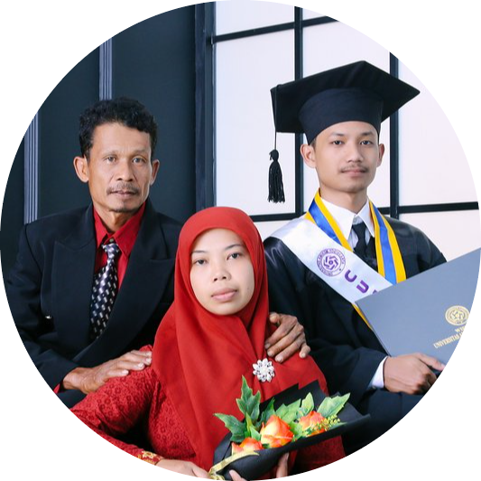

Ady Wijanarko
Motto : --
"Do more, less Gembredex..! #NgunuAE"
Ady Wijanarko, S.Kom
Education History
- Associates Degree Informatics Engineering , STMIK AMIKOM Yogyakarta [2015 ~ 2018]
- Faculty of Computer Science / Informatics (Extend), University Of AMIKOM Yogyakarta [2018 ~ 2019]
- Ringroad Utara Condongcatur Street, Depok, Sleman 55283
Research interest : Data Mining, Web Development, Big Data, Artificial Inteligent
Work Experince
-
PT. Semesta Ruang Inovasi / SEVENPION {Programmer - Backend Web Development}
Aug 2023 ~ Present
-
PT. Medika Digital Nusantara / MORBIS {Programmer - Fullstack Web Development}
May 2023 ~ Present
-
PT. Dua Empat Tujuh / Solusi 247 {Support Engineer As IT - Operation Level 1 [L1] Telkomsel
Project}
Apr 2020 ~ Apr 2022
-
SMK Pancasila 8 Slogohimo {Teacher - Productivity of major Software Engineering}
Jul 2019 ~ Sep 2019
-
SD Juara Yogyakarta {Freelance - IT - Technical Support}
Jun 2016 ~ Mar 2018
-
LPK Unigama Yogyakarta {Freelance - (IT - Trainer & Web Programmer)}
Sep 2015 ~ Apr 2018
Workshop & Sertification History
-
Data Engineer Digitalent KOMINFO x DQLab {2022}
Link
- IT – Essentials CISCO – {2019}
- Cisco Certification Network Asosiate [CCNA - 1] - CISCO – {2016}
- Cisco Certification Network Asosiate [CCNA - 2] - CISCO – {2017}
- SKKNI KOMINFO Programmer Madya – {2018}
- Kepemimpinan & wawasan kebangsaan – Akademi Angkatan Udara Yogyakarta [AAU] – {2017}
- Introduction to Computer [ITC] – AMCC Universitas Amikom Yogyakarta – {2015}
Skill
- PHP {Laravel / Lumen - Codeigniter}
- Database {MySql, Oracle}
- Rest - API {Bassic}
- Python {Bassic}
- Hadoop {Bassic}
- Linux Shell Script / Bash
- Javascript Advance : {Jquery, AJAX} , Bassic : {Node.Js, EXpress.Js}
- Code Versioning {Git, Gitlab}